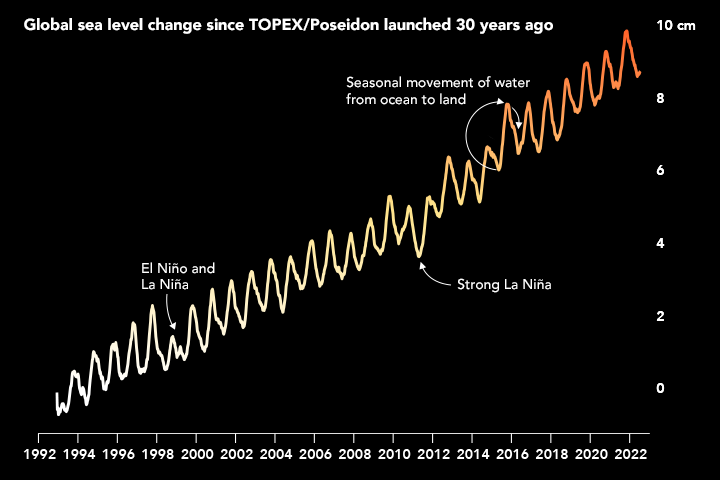

Sea Level
This page will discuss how the sea level has risen over the years

Thirty years ago, scientists and engineers launched a new satellite to study the rising and falling of seas over time,
a task that once could only be done from the coast. TOPEX/Poseidon rocketed into space on August 10, 1992, and started a 30-year
record of ocean surface height around the world. The observations have confirmed on
a global scale what scientists previously saw from the shoreline: the seas are rising, and the pace is quickening.
Source:
https://earthobservatory.nasa.gov/images/150192/tracking-30-years-of-sea-level-rise
-----------------------------------------------------------------------------------------------------------------------------
Home
Aquatic Life
Pacific Garbage Patch
Coral Reef
Endangered Blue Whale
Deep Sea
Tsunami